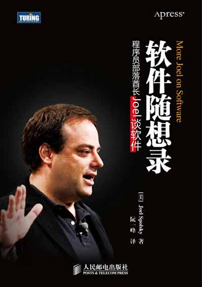
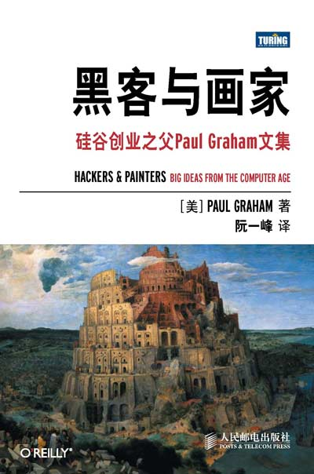

Who am I?
- 以前是老师
- 现在Alipay.com工作
- 《软件随想录》、《黑客与画家》的译者
- 《ECMAScript 6入门》、《如何变得有思想》的作者



- Unicode
- a computing industry standard for providing a unique code point — a number — for each character. (from wikipedia)
Unicode编号规则
- 从0开始编号 u+0000 = null
- 最新7.0版
- 共计109449个符号，包含cjk字符74500个（68%）
- 216（65536）个号码组成一个平面(plain)
- 目前共有17个平面，整个空间大小：221
- 1个基本平面（BMP）：U+0000～U+FFFF
- 16个辅助平面（SMP）：U+010000～U+10FFFF
UTF-32编码
4个字节表示一个字符，
完全对应Unicode编码，
比如，字母a为0x00000061
- Pro：查找效率高，时间复杂度o(1)
- Con：浪费空间，比相同ASCII编码文件大四倍
我们需要一种
节省空间的
表示法！
UTF-8编码
变长编码法，
长度为1～4个字节
| 编号范围 | 字节 |
| 0x0000 – 0x007F | 1 |
| 0x0080 – 0x07FF | 2 |
| 0x0800 – 0xFFFF | 3 |
| 0x010000 – 0x10FFFF | 4 |
UTF-16编码
变长编码法，
长度为2个字节或4个字节
| 编号范围 | 字节 |
| 0x0000 – 0xFFFF | 2 |
| 0x010000 – 0x10FFFF | 4 |
utf-16编码规则
- unicode编号 0xD800 ~ 0xDFFF 为空段
- 编号大于 0xFFFF 的字符
- 前半段映射在 0xD800 ~ 0xDBFF（空间大小210）
- 后半段映射在 0xDC00 ~ 0xDFFF（空间大小210）
转码公式
H = Math.floor((c-0x10000) / 0x400)+0xD800
L = (c - 0x10000) % 0x400 + 0xDC00
U+1D306
𝌆
H = Math.floor((0x1D306-0x10000)/0x400)+0xD800
= 0xd834
L = (0x1D306-0x10000) % 0x400+0xDC00
= 0xDF06